A GPU Ultima Online client with a separate assistant window. Choose who to heal by name, open pet and boat controls in the game, and add your shard's own command buttons. Eight categories keep the full toolset close.
Unsigned development preview · 193,494,129 bytes · Runtimes included · Bring your own compatible game data
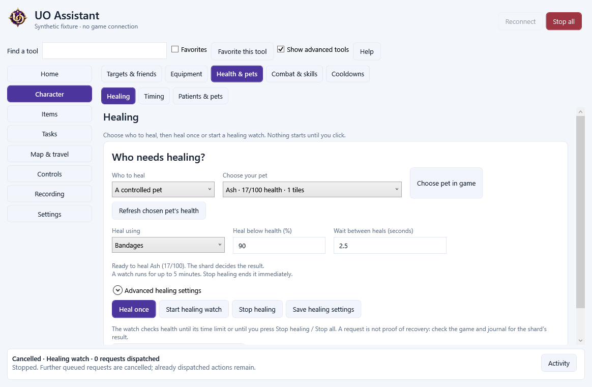
Actual 0.7.0 application capture using synthetic data. Ash is the selected pet. Opening the tool and saving settings do not start healing.
CLEARER HEALING
Heal the patient you chose.
Choose Myself, a controlled pet or your patient list. Pet names, known health and distance appear together. The choice on screen configures the next heal immediately.
Choose a method by name
Use bandages, Heal, Greater Heal or Cure poison. Custom spell numbers and bandage settings remain under Advanced healing settings. Saved custom numbers are kept; readiness checks whether this client actually supports the spell.
See why it is waiting
A healing watch shows its time remaining and explains healthy patients, unknown status, range, mana and missing bandages. Refresh the chosen pet's status without stopping the watch.
Stop healing directly
Heal once makes one checked attempt. Start healing watch runs for its displayed limit. Stop healing ends that watch while keeping your local reminders.
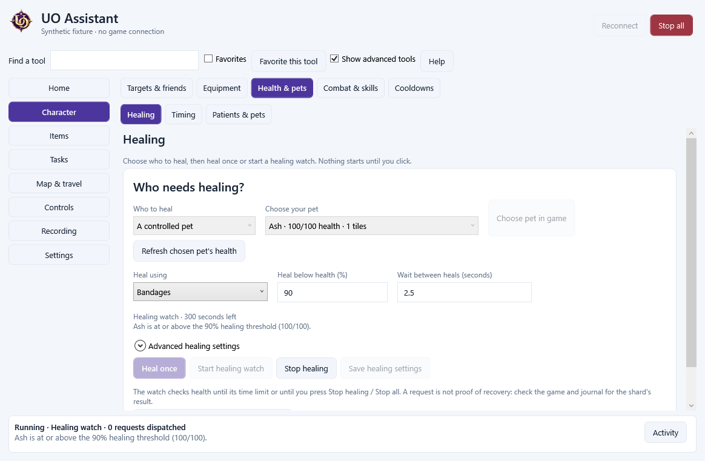
Actual application capture with synthetic pet data. A waiting watch has dispatched no healing request. A request is not proof of recovery: the shard decides the result.
Pet healing waits for loaded control permission and known living health. Bandages reach at most two tiles. Cure requires known poison; it does not assume that a healthy pet needs a cure. Your shard's rules and assistant policy still apply.
CASTING & CONVENIENCE
Keep your weapon and shield close.
Opt in to freeing your hands before casting and restoring the original equipment afterwards. Ordinary potion handling can clear the hands, use one selected potion and recover the original equipment after an observed result.
These choices start off until you enable and save them. Manually changed, missing, protected or unknown equipment is left alone. The assistant does not pick substitute gear or repeat a failed potion attempt.
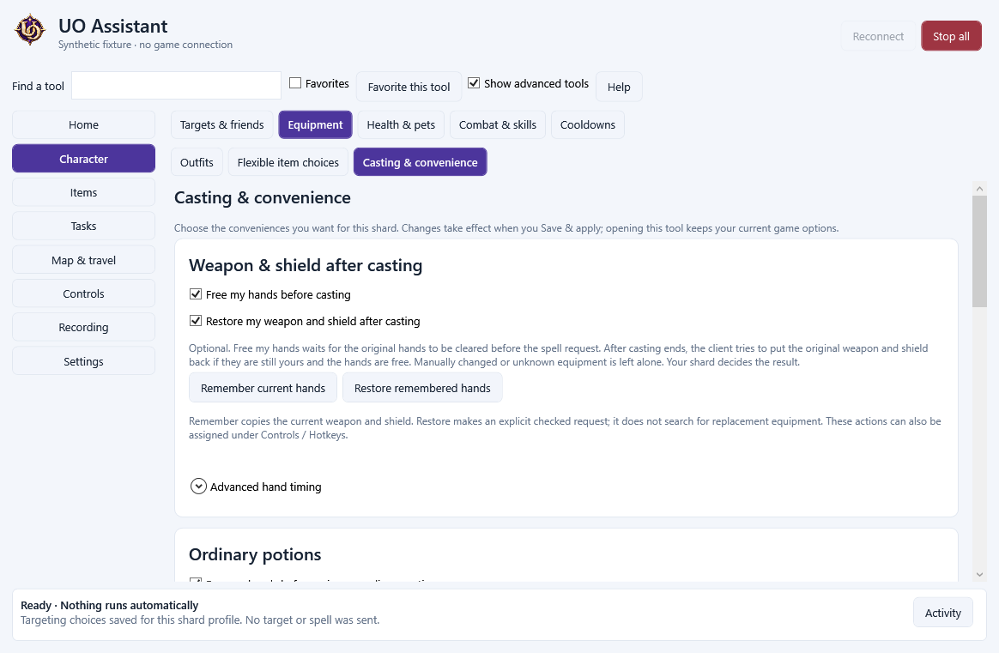
Actual application capture with synthetic settings. The checked options illustrate configuration; this is not evidence of a spell, potion or equipment result on a live shard.
Your current game choices
Door and corpse opening, corpse distance, turning and target-range display prefill from your current character. One Save & apply stores changes for this shard profile.
Last target with context
Keep harmful and beneficial last targets separate. Set a maximum distance and choose whether Heal and Greater Heal should avoid poisoned targets. Unknown status remains unknown.
Readable game information
Choose incoming names, overhead health, damage information, buff time and spell labels. Add accidental-dismount protection in war mode. These use the existing client display and handling options.
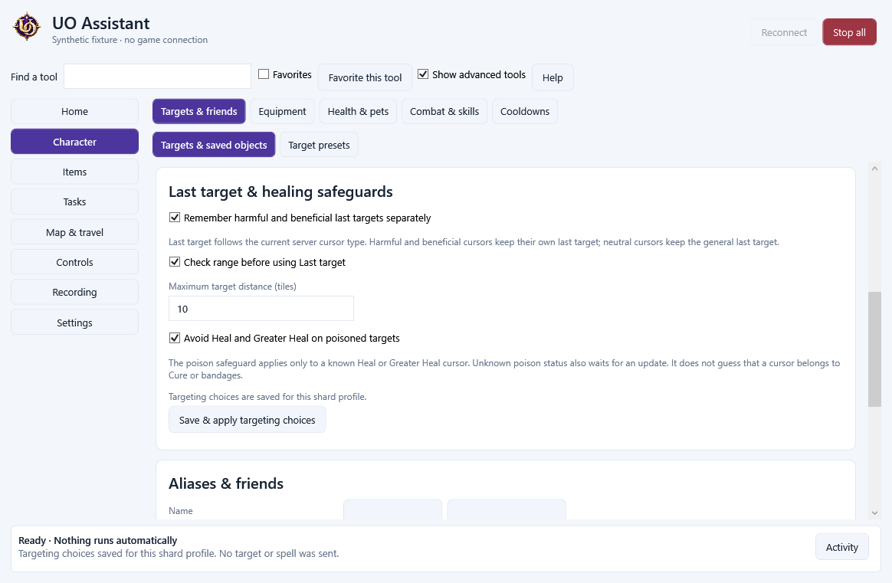
Targeting choices, captured with synthetic settings. The poison safeguard uses known Heal and Greater Heal cursors and loaded status.
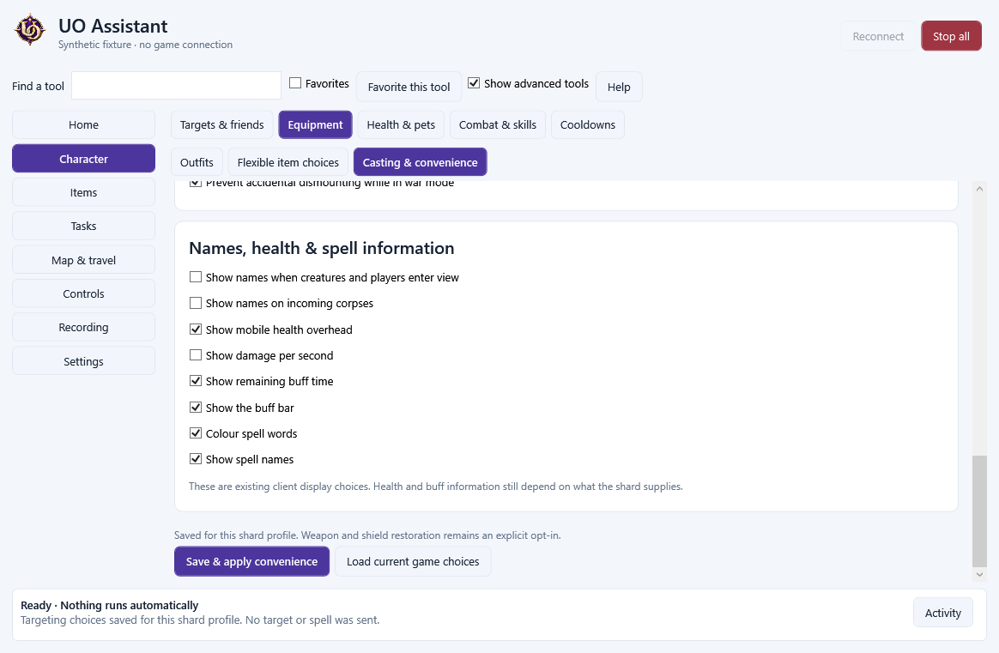
Readability choices in the actual assistant. The shard supplies health and buff information; these settings do not invent missing facts.
The shard still controls spell and potion effects, equipment rules and movement. Checking a box does not send a spell, drink a potion or equip an item.
PET, BOAT & CUSTOM CONTROLS
Open a panel. Click a command.
Keep pet and boat commands inside the game. Add readable buttons for shard commands such as Call pets, which says .sacall.
Actual native GPU interface in a network-fenced fixture. These example panels show the controls; no account is logged in and no pet, boat or shard result is demonstrated.
Open Controls / Commands. Choose Open pet controls, Open boat controls or Open custom controls.
Make the words match your shard. Name a button and enter the exact one-line command. Save button remembers it with this profile and sends no speech.
Use a panel or a named shortcut. Assign a saved command by name to a key, mouse button or action bar. A click or key press sends that ordinary command once.
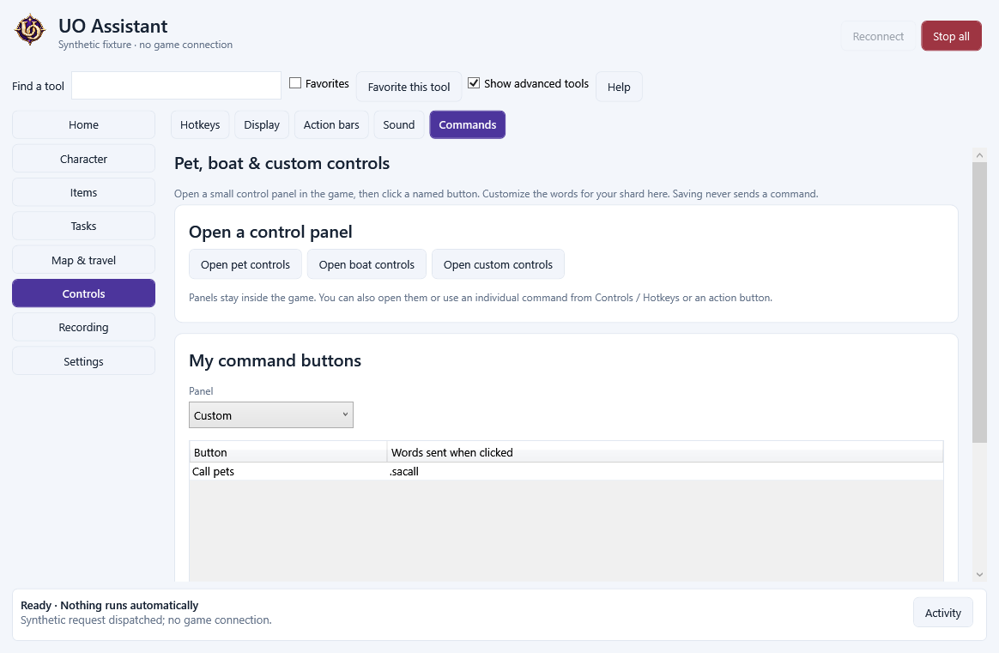
Actual application capture with synthetic settings. Removing or resetting a command also removes its old shortcuts and action buttons so they cannot silently point to another command.
Default pet and boat words are editable. The shard decides whether a pet responds, a boat moves or a custom command is allowed. The panels retain the native GPU interface; they do not change movement speed or shard permissions.
Setup removes identified earlier UO Assistant installations before installing this version. Your saved profiles and scripts are kept. Close the launcher, assistant and game first; if removal cannot finish, setup stops with an explanation.
It checks Windows registrations, your selected installation folder and UO Assistant folders under your personal Programs folder. Downloaded installers, portable copies and development folders are not deleted.
Eight categories with tabs keep related tools together. Familiar words such as bandage, trees and bags find the tools you need. Show advanced tools reveals the full specialist workspace.
Home
Overview, activity and timers
Character
Health, targets, equipment and combat
Items
Bags, loot, moving, restocking and vendors
Tasks
Library, recipes, editors and crafting
Map & travel
Maps, walking, runebooks and team tools
Controls
Hotkeys, pet and boat commands, action bars, display and sound
Recording
Video capture and replay
Settings
Profiles, appearance, backups and diagnostics
Keep your work while you explore
Simple and JavaScript drafts survive switching scripts and tools. The task library shows unsaved drafts; save them together or choose what to do when closing. Custom limits show their exact seconds. Failed saves restore previous definitions, and shortcuts keep their task identity after a rename.
Each tool keeps its Save and Run actions beside the fields they use. Stop all stays visible, and fields have accessible labels. Named object choices help with bags and items. Drafts are kept in the running app; save before a forced shutdown.
The full advanced editor remains available alongside the beginner step builder. Synthetic app capture.
SIMPLE SCRIPTS
Scripts you can read.
Pick a starter recipe or choose steps from menus. Give an object a name, choose what to do, and see the plain command before you run it.
Cast and target
player.cast "flamestrike" on last
player.cast "heal" on self
Spell and skill names come from your client. Targeting waits for the fresh cursor automatically.
Put items in bags
items.move graphic 0x1BDD to saved "wood bag" amount all from backpack
Choose an item, source bag, destination and amount in the builder. It writes the full command on one line and waits for each move to be observed.
Chop nearby trees
trees.chop nearby using "lumberAxe" within 12
Equip your saved axe and dismount; the recipe checks weight, health, tool and server replies while visiting trees.
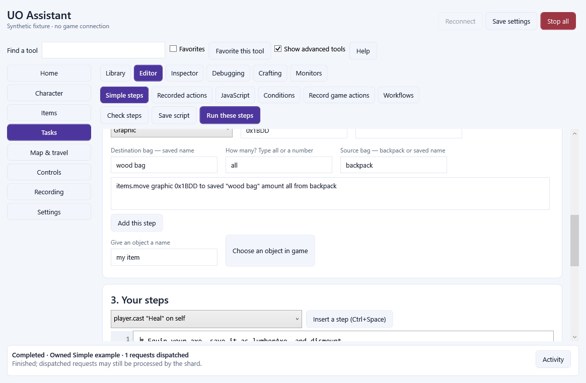
Actual 0.6.0 app, using synthetic test data. The menus write each command for you; no live game connection is shown.
The beginner library has 43 builder entries and 15 recipes. Find trees, cave tiles, items or windows; walk to results; use readable conditions and finite repeats. Save and share .uosimple files with their run limits. Existing JavaScript scripts, the 48-method API and advanced debugging remain available.
Open source and destination bags first. Missing or ambiguous names, incomplete scans and unconfirmed moves stop with a source-line explanation. The tree recipe reports unreachable trees as skipped; it does not bank or drop logs. It uses Invicta journal messages and still needs a live shard check.
Readable steps and an optional advanced JavaScript copy, both using the same checked runner.
SCANNING TOOLS
Find what your script needs.
Search the loaded world and visible game windows using names, graphics and hues. Each result tells your script when more pages or missing data need attention.
Trees and cave tiles
scanTiles finds nearby loaded land and static tiles. Filter tree or cave candidates, use tile names or original graphics, and read coordinates for your next action.
Items by name or graphic
findItems searches cached property, item and tile names. Combine graphic, hue, equipment, ownership and container filters. Ground searches can also use a distance limit.
Open game windows
findGumps inspects visible local and server windows, active-page controls, labels, artwork and button details. Search by displayed text, graphic, hue, type or serial.
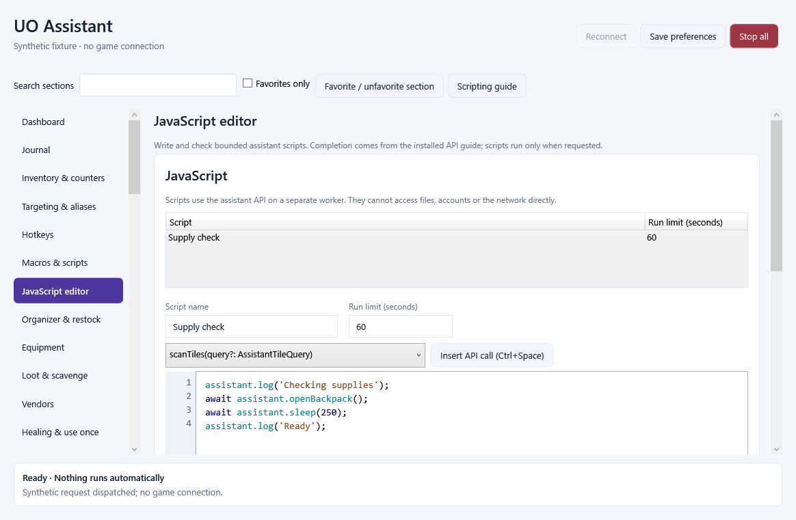
Actual 0.4.0 application capture using synthetic test data. The editor includes the new scan API; no live game connection is shown.
Scans are read-only: they do not open containers, load unseen terrain or click a button. Names come from available client data; a custom cave graphic or unknown item name may need an explicit graphic filter. Editable text fields are excluded from window results. Scans retain shard policy and current-session checks.
Scripts can explicitly request up to 30 minutes, with finite action and execution limits. Large scans are paginated and can be incomplete. The offline bench does not invent terrain or window data, and live shard testing remains necessary.
Keyboard, side buttons and wheel shortcuts; tap, release and hold; game, chat and targeting contexts; per-binding pass-through. Native spell, task and timer bars keep useful actions close.
Record and build tasks
Record ordinary game actions, inspect their steps, and replace temporary item IDs with rules or aliases. Build finite visual workflows with named functions and review the action plan.
Script with clearer feedback
JavaScript source breakpoints, local variables, call stacks and an offline bench. The migration assistant reports supported and unsupported legacy commands by source line.
Inspect, sort and equip
Target an item to make a counter, alias, protected entry or rule. Route named loot rules to different bags; search and compare inventory; preview multi-item moves and flexible equipment choices.
Choose the right target
Saved nearest, next, previous and lowest-known-health presets, friend exclusions and poison/body filters. Patient and pet views keep unknown health and ownership explicit.
Plan an expedition
Death notes, healer points, numbered routes, map layers and zones. Import UOAM, Ultima Mapper XML or CSV markers and preview routes across already-loaded terrain.
Travel and coordinate
Runebook recipes with fresh dialog and page checks; optional, explicit team-map messages and help pings; saved role layouts for matching open windows.
Track and tune
Shard-specific potion and bandage timing, failed/interrupted/unknown states, focused journal views and individual sound presets. Quiet background diagnostics add P99 and long-frame measurements.
These features bring together useful assistant workflows. They retain current-state checks, manual login, shard policy and the separate assistant. An item-use request is not a server acknowledgement; timings and actions must match your shard.
Actual application capture with synthetic test data: richer input configuration stays in the separate assistant.
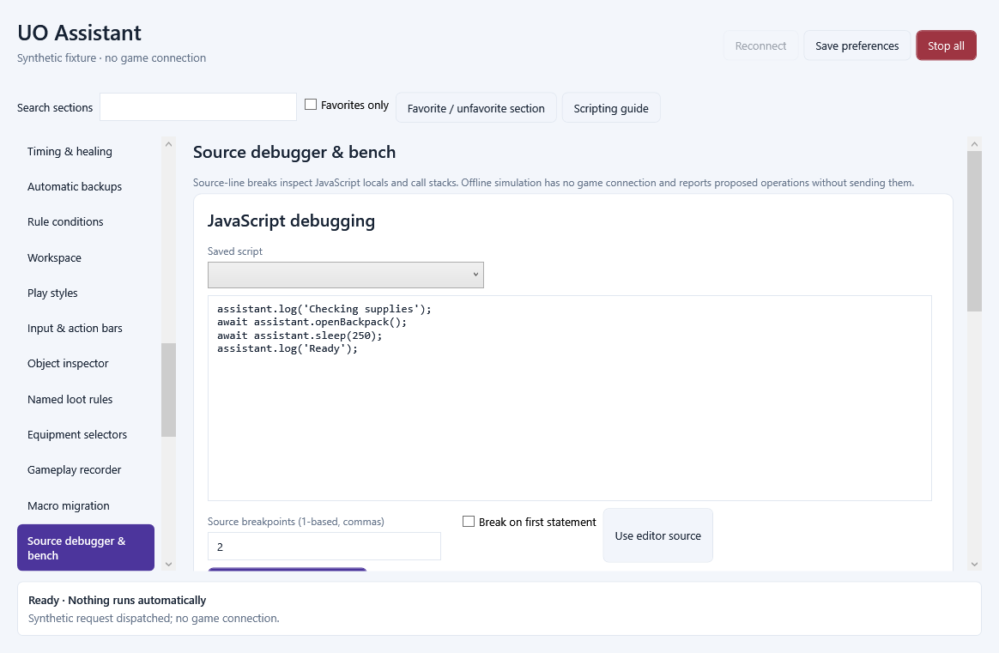
Source debugging and offline testing use the application runner. This synthetic test has no game connection.
GPU RECORDING AND REPLAY
Record your game with your GPU.
Choose a quality level and output resolution, start recording, or save the recent moments from an encoded replay buffer. Clips stay on your computer.
Hardware compression
HEVC, AV1 and H.264 are available when your GPU and driver support them. Auto probes compatible encoders, starting with HEVC. Compact, Balanced and Detailed trade file size against visual detail.
Your game window
Capture the paired game window, with optional game-only audio. The microphone remains off. Video needs Windows 10 version 2004 or later; game-only audio needs Windows 11 or supported Windows Server.
Keep useful moments
Configurable 10–300 second replay, a bounded encoded disk buffer, manual start/stop and shortcut controls. Trim a copy without another video encode; complete segments remain recoverable after an interruption.
Recording uses its own capture and encoder workers. A busy encoder does not make the game render loop wait. Hardware support is checked at runtime; the application does not silently fall back to CPU video encoding. NVIDIA hardware was tested for 0.3.0; the same hardware encoder components remain in this release. Starting from the Recording page now uses the quality and folder currently shown; save those settings for recording hotkeys and the next launch. AMD and Intel encoder choices are offered through runtime probing and need receiving-system checks.
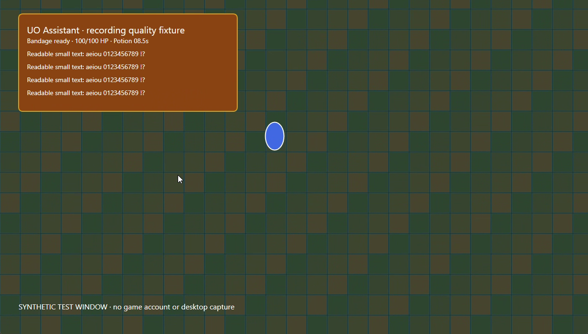
Decoded frame from a real hardware-encoded AV1 clip. The moving grid and text belong to a synthetic test window, not a player session. Text quality and file size depend on your settings and scene.
In the short NVIDIA quality fixture, Balanced HEVC, AV1 and H.264 kept similar measured text detail; HEVC produced the smallest file of those runs. This is a measured test result, not a guarantee of the smallest file for every shard, scene or graphics card.
The game and separate assistant open without a command window during a normal launch. Warning/error logs are written on a bounded background worker; trace logging is optional. The game keeps its GPU renderer, native gumps, movement and targeting.
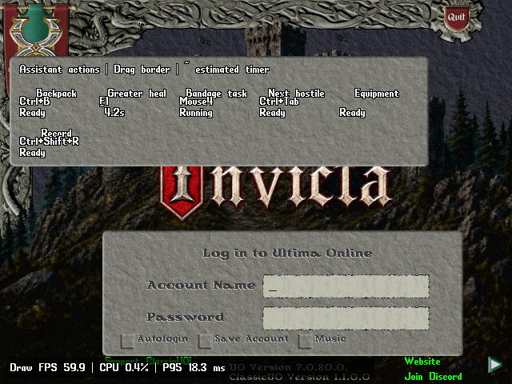
Actual native GPU UI capture from the network-fenced login fixture. The bar uses example actions and an estimated timer. No live character, world movement or gameplay performance is shown.
Same native login/UI fixture, steady samples
Mode
Median Draw FPS
Frame P99
Client baseline
59.97
18.42 ms
Action bar and AV1 recording
59.98
18.57 ms
Recorded with 0.3.0: twenty-two seconds per run, eleven steady samples; zero observed frames above 33.3 ms in those windows and zero reported encoder drops. This synthetic test uses a login/UI scene, not live walking. Draw FPS counts completed presents rather than physical monitor refresh. Receiving-system gameplay and shard-specific dialogs still need player testing.
The updated scripting guide covers Simple Scripts and all 48 JavaScript API methods, snapshots, target and dialog ownership, visual workflows, the source debugger, migration reports and troubleshooting. Tested example scripts are included.
The supplied UOSteam corpus converted 32 of 200 scripts fully in the audited importer. Unsupported lines remain visible for manual adaptation. This does not promise complete Orion, Injection, UOSteam, Razor, Python or C# compatibility, and parsing a script does not verify its behavior on your shard.
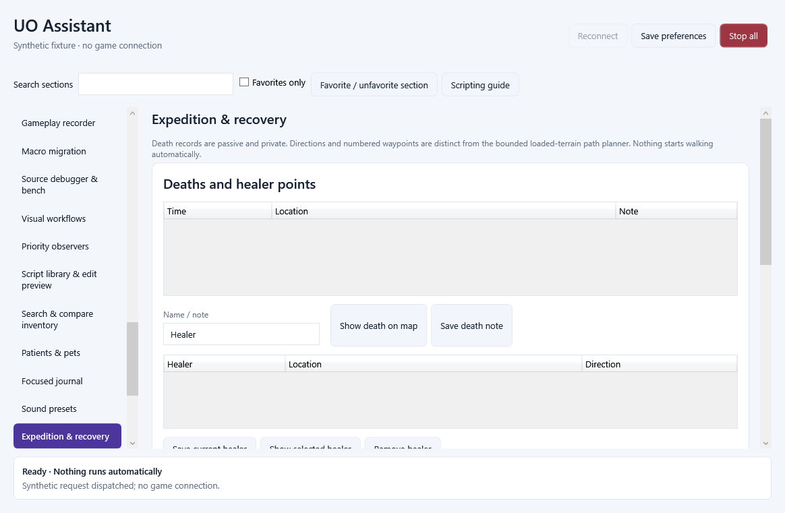
Actual application capture with an empty synthetic expedition profile. Marker-format support integrates compatible data; it does not embed the standalone Ultima Mapper program or its sharing service.
GET STARTED
Bring your shard's game data.
Install for your Windows account. Run the checked setup EXE. The game, separate assistant, recording tools and app runtimes are included.
Add a shard profile. Select a complete compatible client-data folder or client.exe. Check the address, port and encryption against your shard's instructions. Login stays manual.
Choose Play and configure your tools. Normal launches are quiet. Nothing records or runs a task until you start it. Keep timings, sound choices and rules with that shard profile.
Closing the assistant closes its paired game, and closing the game closes that assistant. Private profiles remain separate from installed program files. No game artwork, maps, accounts, credentials or shard saves are distributed.
The launcher retains automatic website update checks: startup and every 30 minutes while idle. Review the notice and choose when to download and install. Saved opt-outs are retained; an update check does not close a game or install software automatically.
The source README documents managed builds and complete installer rebuild prerequisites.
Recording components and matching source
FFmpeg is used under LGPL version 3 or later. The recording dependency notices, matching source and rebuild instructions are provided separately alongside the application source and original notices.
The verified release passed 1,307 isolated application checks; 502 synthetic assistant interface checks; 111 launcher core/network checks; 15 synthetic launcher interface checks; 18 installation, preservation and removal checks. Tests used owned files and synthetic fixtures. Final counts and package identities are retained in the release record.
These results cover application behavior, interface actions, package integrity and source checks using owned files and isolated fixtures. They do not establish universal shard compatibility or live gameplay FPS. Synthetic screenshots are labelled. Hardware capture was tested on NVIDIA; healing, commands, hand recovery, targeting, travel and dialogs still need checks with your shard and game data.
External Qodo review was unavailable because it was signed out. The updater's application release signature is separate from Windows publisher signing; this development installer remains unsigned.